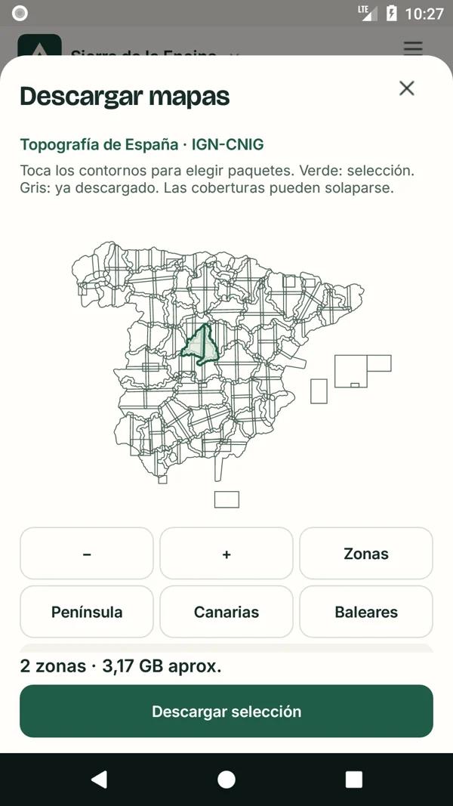

Aflorario / Guías de campo
Guía de campo · 22 noviembre 2026
Cómo preparar mapas para una salida geológica sin conexión
Ver un mapa con Wi-Fi no demuestra que esté disponible en el campo. Prepara los archivos locales y comprueba el recorrido sin conexión antes de salir.
Elige cómo llevar el mapa
Descarga desde la app, con Pro. Abre Mapa → Capas → Descargar mapas. Selecciona zonas de España sobre sus contornos o en la lista. La selección muestra el tamaño total aproximado antes de descargar los paquetes oficiales IGN-CNIG. El mapa queda disponible automáticamente al completarse.
Importa un archivo propio, gratis. En Capas, usa Importar mapa propio y elige un MBTiles ráster compatible. Necesitas disponer del archivo y de permiso para utilizar su cartografía. Importar no crea teselas que no estén incluidas en el archivo.

Comprueba cobertura y detalle
Una zona puede tener datos para un nivel de zoom y no para otro. Revisa las estaciones, el recorrido y el detalle que necesitas. Herramientas → Preparar salida sin cobertura ayuda a comprobar las teselas locales en las estaciones; complementa esa comprobación desplazándote por el trayecto.
Los mapas en línea de callejero, relieve y satélite funcionan directamente con internet. No es obligatorio importar archivos para usarlos. Los paquetes locales son una preparación adicional para trabajar sin cobertura.
Lista antes de salir
Marca las comprobaciones en este navegador. No se envían ni se guardan al cerrar la página.
Si aparece una zona vacía
Comprueba primero que has activado el mapa local y que estás dentro de sus límites. Cambia de zoom y revisa la cobertura del archivo. Si la base en línea desaparece al quitar internet pero tu capa local sigue visible, estás consultando la cartografía local. No des por preparada una salida hasta verificar el área que vas a utilizar.
Las descargas usan Wi-Fi de forma predeterminada. Descargar nuevos paquetes desde Aflorario requiere Pro; importar tus MBTiles y consultar mapas ya guardados sigue siendo gratuito. La cartografía conserva las atribuciones y condiciones de sus proveedores; consulta el aviso legal del IGN.